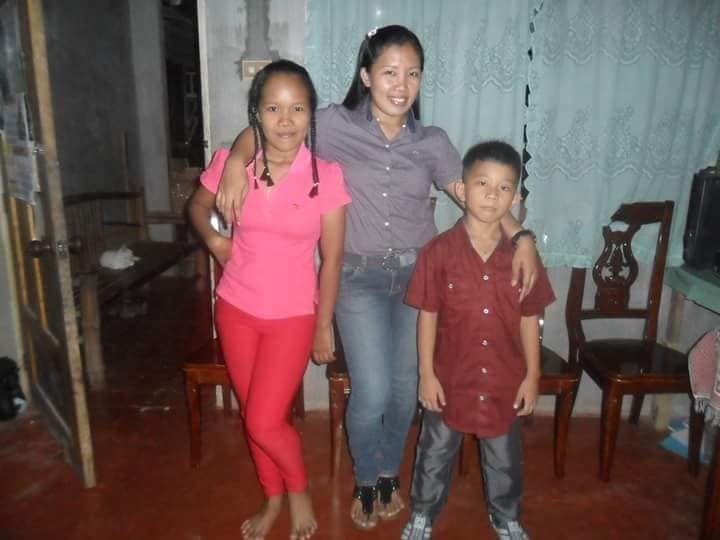

Every story has a beginning, Welcome to mine. Let's dive in and discover my journey that shapes me.
First, I'm gonna be talking about my mother of how she disciplined or reprimanded me. I know she'll hate me
for telling y'all this but I guess it's do or die HAHAHAHA okay. I didn't said this before but when I was a little
my mother is a Police Woman and if y'all know their belt they used when they wear that blue uniform that belt she used when
I get into trouble or making mistakes and there's one time that she hit me with the lock part of the belt and
I shouted at that time and my nanay immediately get inside the room where my mother hits me then my nanay grabbed
me and she hides me inside their room and my mother got reprimanded by my nanay HAHAHAHA. I mean despite of all I get
from my mother I feel like I should consistently choose the path of righteousness and growing up it really helps
me growing as a whole person. I want you to know my interests in life. Video Games - growing up I played video games
such as Dota, GTA The Vice City and San Andreas version, Counter-Strike, Call of Duty Modern Warfare, Need for Speed,
Left 4 Dead, and etc. I do love playing video games specially when I'm at my teenage life our mental health just starting
to develop and it's sad but playing video games really helps me to breakthrough. Last is my Travel Journey. One of the best
travel I experienced was on January 01, 2023. I was with my Homies(Friends) and we traveled to a small island where the sand
is the best sand I ever touched. It's a beach and we did everything we do that can makes us happy. Drinking Tanduay sitting
at the side of the beach with a bonfire at the center of us. The best travel with friends I experienced.
This is New Year's Eve. Year 2014

This is our Pasonanca Trip. August 7, 2010

Our trip to Dakak. September 12, 2011

My Travel with homies. January 01, 2023